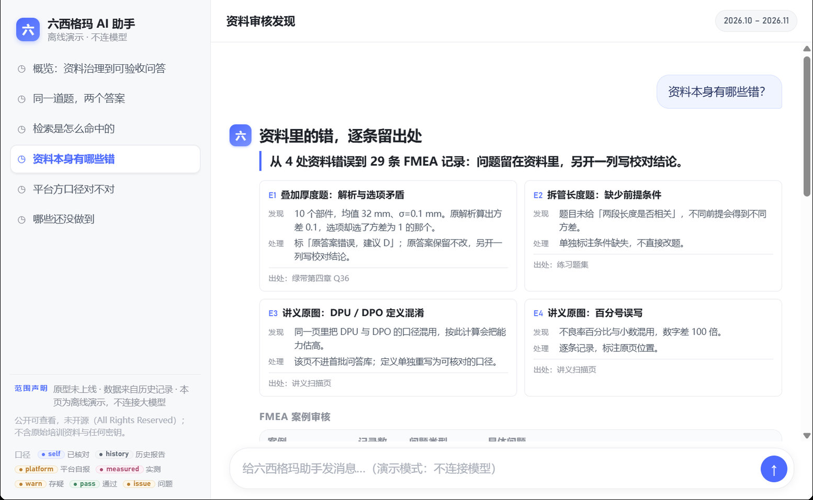
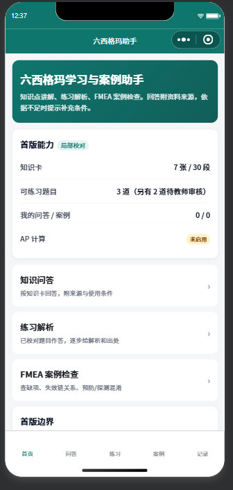
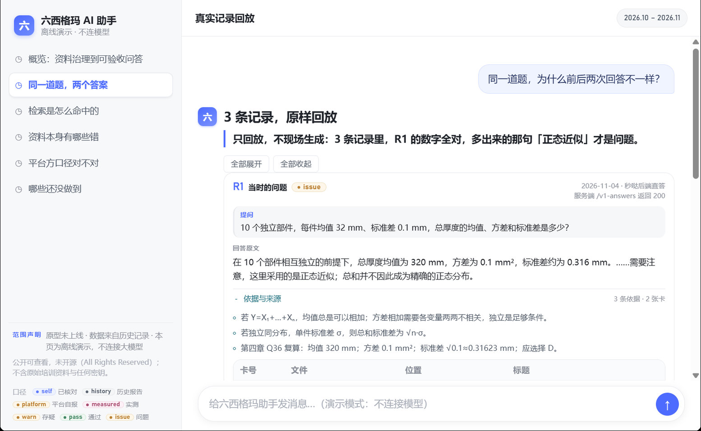
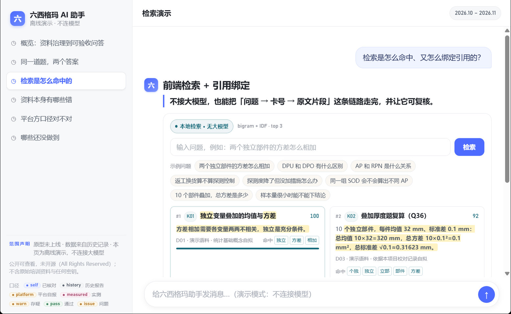
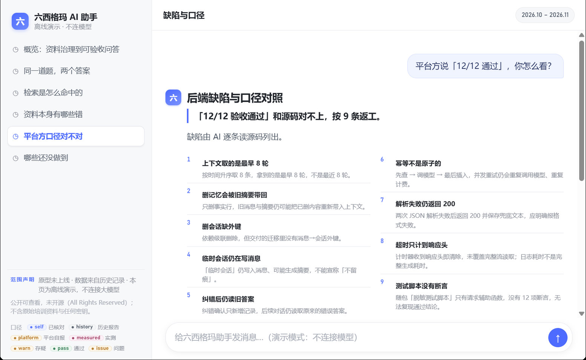
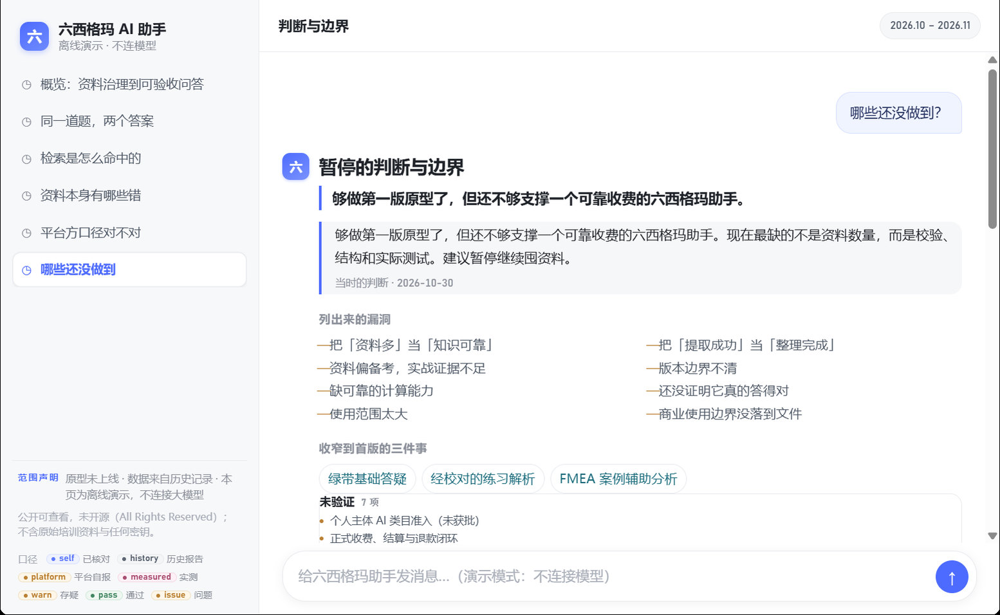

Case 03 · 个人项目 · 知识工程与测试
六西格玛 AI 助手微信小程序
Six Sigma AI Assistant Mini Program
整合教材、标准、AIAG 手册、题库与制造业案例，配置按 DMAIC 阶段检索并完成 12 项功能与安全验收闭环。

资料治理与知识库构建
整合教材、标准、AIAG 手册、题库与制造业案例（61 条核心资料 / 10 张案例卡 / 16 张方法卡），前置清洗拦截原题解析方差算错、FMEA 案例 AP 等级矛盾及 AP 规则表非法端点。


全链路问答工作流配置
交付备考与实战双模式，按「意图识别 → 检索 → 依据校验 → 生成或追问 → 溯源」拆解测试用例，重点验证 DMAIC 阶段路由、出处回溯、依据不足追问及越界拒答。


源码审计与安全回归
逐条核验后端源码与测试脚本，拦截无断言验收报告并退回 9 项实质缺陷（含记忆回带、幂等非原子等）；完成 12 项验收闭环与缺陷复测，验证 JWT 鉴权、数据隔离及 10 次/分钟限流策略。

